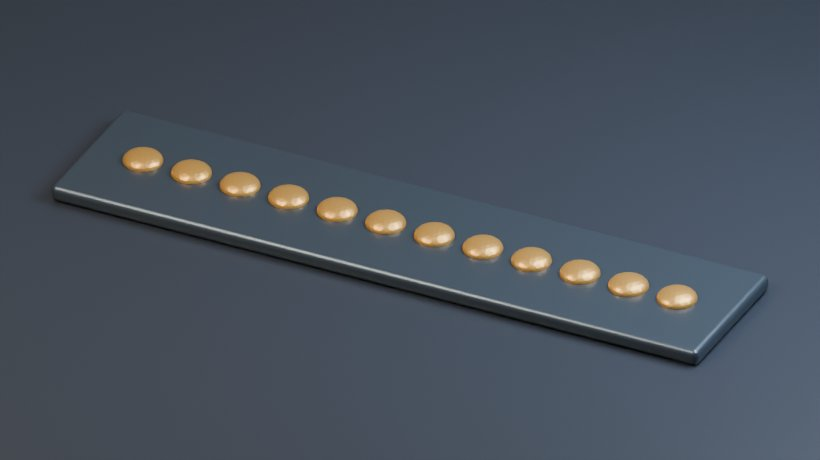
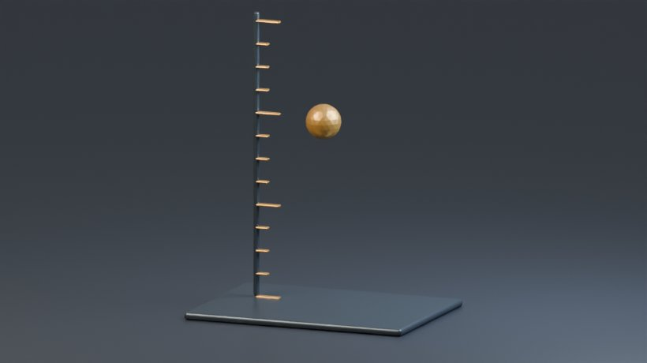

OFICINA DE AERONAVES · BLENDER 4.5 LTS
T-6 Texan
Da fuselagem ao voo.
Construa um treinador da Segunda Guerra por dentro e por fora. Modele a cabine dupla, articule o trem de pouso e leve o avião até a montagem final em Cycles.
Começar o curso
Oficina de modelagem
Na viewport do Blender
Abra uma etapa para comparar duas capturas da viewport e baixar a cena editável do exercício.
 Gabarito e proporções
Gabarito e proporções Instrumentos e canopy
Instrumentos e canopy Trem de pouso
Trem de pousoTRILHA DE PRODUÇÃO
Programa do curso
Oficina procedural · Blender
Laboratório de nodes
Monte um balizamento animado e uma esteira de partículas. Siga cada trilha em ordem e compare o seu grafo com as cenas editáveis do Blender 5.3.

Geometry Nodes
Da primeira instância ao balizamento procedural
1 / 5 · Básico Uma fileira de luzes
Gere doze balizadores com uma única esfera e descubra o que percorre os cabos verdes.
- Selecione o cubo inicial em Object Mode. Abra a área Geometry Nodes e clique em New. No editor, use Shift A e a busca para adicionar cada nó pelo nome em inglês. Arraste um cabo da bolinha de saída até a entrada indicada.
- Adicione Mesh Line no modo Offset. Use Count 12, Start Location (0, 0, 0) e Offset (1, 0, 0). O nó cria vértices espaçados de um metro.
- Adicione Ico Sphere com Radius 0,12 m e Subdivisions 2. Faça as três ligações abaixo. A última substitui o cabo original do cubo. Use Home na viewport para enquadrar.
| Saída ou cálculo | Entrada |
|---|---|
| Mesh Line · Mesh | Instance on Points · Points |
| Ico Sphere · Mesh | Instance on Points · Instance |
| Instance on Points · Instances | Group Output · Geometry |
Confira na viewportVocê deve contar 12 luzes ao longo de X. Mude Count para 6. Se enxergar apenas uma esfera, confira se a linha alimenta Points.
Desafio. Crie duas fileiras. Duplique a Mesh Line, coloque Start Location Y em 3 m e reúna as duas linhas com Join Geometry antes de instanciar.
2 / 5 · Prática guiada Rebites para uma chapa de alumínio
Use a fileira de luzes da primeira aula como ponto de partida. Agora a distância entre os pontos define a furação da chapa e a escala da instância define a altura de cada cabeça.
- No grafo da primeira aula, ajuste Mesh Line para Count 12, Start Location (−1,65, 0, 0,024) e Offset (0,30, 0, 0). Os centros extremos ficam em X = −1,65 e +1,65 m.
- Em Ico Sphere, ajuste Radius para 0,115 m. Em Instance on Points, use Scale (1, 1, 0,48). A esfera fica achatada apenas no eixo perpendicular à chapa.
- Crie a chapa em outro objeto. Use um cubo com Dimensions (3,8, 0,6, 0,05) m, centrado na origem. A superfície superior atravessa os rebites perto do equador. Para um close, aplique a escala da chapa antes de arredondar as bordas com Bevel.
- Para comparar dois espaçamentos mantendo o trecho coberto, troque Count para 23 e Offset X para 0,15. Observe como as extremidades permanecem no lugar.
Confira na viewportCom 12 rebites há 11 intervalos. A 0,30 m por intervalo, a distância entre o primeiro e o último centro é 3,30 m.
Baixar cena do exercício (.blend)3 / 5 · Básico Luzes que acompanham uma curva
Troque a linha reta por um caminho que pode ser desenhado à mão.
- Em Object Mode, adicione Curve › Bézier. Com a curva selecionada, crie um novo modificador em Geometry Nodes. Em Edit Mode, mova os pontos e use E na extremidade para desenhar uma curva longa.
- Adicione Curve to Points no modo Length. Comece com Length 0,6 m. Cada ponto recebe uma posição e uma orientação calculadas sobre a curva.
- Ligue uma Cube de tamanho (0,25, 0,12, 0,12) a Instance. Conecte os sockets abaixo. Para enxergar a orientação, aumente uma dimensão do balizador e observe-o nas curvas.
| Saída ou cálculo | Entrada |
|---|---|
| Group Input · Geometry | Curve to Points · Curve |
| Curve to Points · Points | Instance on Points · Points |
| Curve to Points · Rotation | Instance on Points · Rotation |
| Instance on Points · Instances | Group Output · Geometry |
Confira na viewportAlongue a curva em Edit Mode. Surgem novos balizadores. Se a quantidade continuar fixa, confira o modo Length.
Desafio. Compare Length 0,4 e 1,2 m no mesmo traçado. Anote qual espaçamento mantém a silhueta legível de longe.
4 / 5 · Intermediário Um pulso que percorre a pista
Use um campo para variar cada luz conforme sua posição na sequência.
- Parta da aula anterior. Adicione Index. No socket Scale de Instance on Points, o Blender calcula o campo para cada ponto. Construa a fase com nós Math em Multiply, Subtract e Sine.
- Multiplique Index por 0,55. Em outro Multiply, multiplique Scene Time › Seconds por 3. Subtraia o segundo valor do primeiro e passe o resultado para Sine.
- Ligue Sine a Map Range. Defina From Min −1, From Max 1, To Min 0,4 e To Max 1,4. Ligue Result a Scale. Um valor escalar alimenta os três eixos.
| Saída ou cálculo | Entrada |
|---|---|
| Index × 0,55 | Subtract · primeira entrada |
| Seconds × 3 | Subtract · segunda entrada |
| Subtract → Sine | Map Range · Value |
| Map Range · Result | Instance on Points · Scale |
Confira na viewportAo tocar a timeline, o ponto de maior escala deve percorrer a pista. Se todas as luzes pulsarem juntas, confira a conexão de Index.
Desafio. Inverta o sentido do pulso mudando Subtract para Add. Depois dobre a velocidade sem alterar a distância entre os picos.
5 / 5 · Avançado Um gerador de pista reutilizável
Transforme a curva, o cabo e os balizadores animados em um único modificador com controles artísticos.
- Continue o grafo anterior. Crie uma segunda ramificação a partir da geometria original da curva. Use Curve Circle com Resolution 8 e Radius 0,04 m como perfil de Curve to Mesh.
- Una o cabo e os balizadores em Join Geometry. Para dar cores diferentes, use dois materiais já criados em Material Properties e insira um Set Material depois de Curve to Mesh e outro entre Cube e Instance on Points.
- Arraste Length de Curve to Points até o socket vazio de Group Input para expor o espaçamento. Faça o mesmo com Radius de Curve Circle e o fator de velocidade do pulso. Na interface do grupo, renomeie os controles para Espaçamento, Raio do cabo e Velocidade.
| Saída ou cálculo | Entrada |
|---|---|
| Group Input · Geometry | Curve to Mesh · Curve |
| Curve Circle · Curve | Curve to Mesh · Profile Curve |
| Cabo com material + instâncias | Join Geometry · Geometry |
| Join Geometry · Geometry | Group Output · Geometry |
Confira na viewportCrie outra Bézier e selecione o mesmo grupo no modificador dela. Mude o espaçamento só na segunda curva. Os dois objetos devem conservar valores independentes.
Desafio. Desenhe um S e um círculo fechado. Ajuste os três controles em cada um e compare o encontro dos pulsos na emenda do círculo.

Simulation Nodes
Do primeiro passo ao rastro com vento e gravidade
1 / 5 · Básico Um ponto com memória
Mova um ponto a dois metros por segundo e observe como cada quadro parte do anterior.
- Crie um grupo novo no cubo. Use Mesh Line com Count 1 como ponto inicial. Adicione Simulation Zone pela busca e identifique o par Simulation Input e Simulation Output.
- Dentro da zona, encaixe Set Position no cabo Geometry. Crie Vector Math em Scale com Vector (2, 0, 0). Ligue Delta Time a Scale. O resultado é o deslocamento de um passo, em metros.
- Depois da zona, adicione Instance on Points com uma Ico Sphere de raio 0,1 m para visualizar o ponto. Ligue as instâncias à saída. Volte ao quadro 1 e reproduza em sequência a 24 fps.
| Saída ou cálculo | Entrada |
|---|---|
| Mesh Line · Mesh | Simulation Input · Geometry |
| Simulation Input · Geometry | Set Position · Geometry |
| Vetor (2,0,0) × Delta Time | Set Position · Offset |
| Set Position · Geometry | Simulation Output · Geometry |
Confira na viewportEntre os quadros 1 e 25, o ponto deve avançar aproximadamente 2 m. Se ele ficar perto da origem, confira se Set Position recebe a geometria de dentro da zona.
Desafio. Teste a 48 fps por 48 intervalos. Compare a distância ao fim de um segundo nas duas taxas.
2 / 5 · Prática guiada Queda controlada com Delta Time
Construa um teste de velocidade constante. A régua da cena editável permite medir o deslocamento antes de acrescentar a gravidade nas aulas seguintes.
- Em um novo modificador Geometry Nodes, crie UV Sphere com Radius 0,19 m. Passe a malha por Transform Geometry com Translation Z = 3 m. Conecte a saída à entrada Geometry do Simulation Input.
- Dentro da zona, passe Geometry de Simulation Input por Set Position até Simulation Output. Conecte Geometry de Simulation Output a Group Output.
- Adicione Vector Math em Scale. Use (0, 0, −1) como vetor e ligue Delta Time a Scale. Ligue Vector a Offset de Set Position. O produto mede quantos metros a esfera percorre durante um passo.
- Em Output Properties, defina 24 fps. Volte ao quadro 1 e reproduza em sequência até o 25. A partir do quadro 1 em Z = 3 m, os 24 intervalos devem levar o centro a Z = 2 m.
Confira na viewportTroque o vetor para (0, 0, −0,5), volte ao primeiro quadro e reproduza. No quadro 25, a nova altura esperada é 2,5 m.
Baixar cena do exercício (.blend)3 / 5 · Intermediário Um rastro atrás do emissor
Grave amostras do movimento de um Empty para desenhar sua trajetória.
- Crie um Empty do tipo Plain Axes. Insira keyframes de Location nos quadros 1 e 49, primeiro em (0,0,0), depois em (4,2,0). Crie um grupo novo em um cubo com transformações padrão.
- Adicione uma Simulation Zone e deixe a geometria inicial desconectada. Crie Points com Count 1. Em Object Info selecione o Empty e espaço Relative. Ligue Location à Position de Points. Mantenha esse ramo independente do estado anterior.
- Dentro da zona use Join Geometry para reunir o histórico e a amostra atual. Após Simulation Output, instancie uma Ico Sphere com Radius 0,06 em cada ponto. Reproduza desde o início.
| Saída ou cálculo | Entrada |
|---|---|
| Object Info · Location | Points · Position |
| Simulation Input · Geometry | Join Geometry · Geometry |
| Points · Points | Join Geometry · Geometry |
| Join Geometry · Geometry | Simulation Output · Geometry |
Confira na viewportVocê deve ver uma sequência de marcas entre os keyframes. Se todas se sobrepuserem, observe as coordenadas do Empty enquanto a timeline roda.
Desafio. Acrescente um keyframe no meio, 2 m acima do plano. Compare o espaçamento das marcas perto dos extremos com a interpolação Linear e Bézier.
4 / 5 · Intermediário Partículas com tempo de vida
Faça o rastro desaparecer gradualmente, mantendo cerca de um segundo de histórico.
- Parta do rastro. Insira Store Named Attribute apenas no ramo do histórico antes de Join Geometry. Defina Float, domínio Point, Name idade. Para ler o valor anterior, use Named Attribute em Float com o mesmo nome.
- Adicione a idade lida a Delta Time com Math › Add e grave o resultado em Value. No ramo de Points recém-criados, use outro Store Named Attribute com idade igual a zero. Isso garante uma idade inicial para cada nascimento.
- Depois de Join Geometry e ainda dentro da zona, insira Delete Geometry no domínio Point. Leia idade com Named Attribute e use Math › Greater Than com limite 1,0 para alimentar Selection. Fora da zona, use Map Range com Clamp para converter idade de 0–1 em escala de 1–0,1.
| Saída ou cálculo | Entrada |
|---|---|
| idade anterior + Delta Time | Store Named Attribute · Value |
| Histórico envelhecido + ponto novo | Join Geometry · Geometry |
| idade > 1,0 | Delete Geometry · Selection |
| Delete Geometry · Geometry | Simulation Output · Geometry |
Confira na viewportApós dois segundos, a cauda deve continuar curta. Se todos sumirem juntos, confira se você inicializou idade somente nos pontos novos.
Desafio. Mude o limite para 0,5 s e ajuste From Max do Map Range para 0,5. Compare comprimento e quantidade de pontos no Spreadsheet.
5 / 5 · Avançado Esteira de partículas com vento e bake
Faça cada amostra herdar velocidade, cair sob gravidade e reagir ao vento enquanto o emissor se desloca.
- No ramo de nascimento da aula anterior, acrescente Store Named Attribute em Vector, domínio Point, nome vel, valor (0, 0, 2). No ramo do histórico leia vel com Named Attribute do tipo Vector. Use sempre nomes e tipos idênticos.
- Monte a aceleração (1,5, 0, −4) em Combine XYZ. Multiplique-a por Delta Time com Vector Math › Scale. Some à velocidade anterior com Vector Math › Add e grave em vel antes de mover o histórico. X fornece vento lateral e Z fornece gravidade.
- Após gravar vel, conecte Set Position. Leia a nova vel, multiplique por Delta Time e ligue ao Offset. Depois reúna o histórico movido e o ponto novo, aplique a expiração e devolva à zona. As instâncias continuam depois da zona.
| Saída ou cálculo | Entrada |
|---|---|
| Aceleração × Delta Time + vel anterior | Store Named Attribute · vel |
| vel atualizada × Delta Time | Set Position · Offset |
| Histórico movido + nascimento | Join Geometry · Geometry |
| Pontos após expiração | Simulation Output · Geometry |
Confira na viewportA cauda nasce subindo, encurva para baixo e deriva em X. Salve o .blend, defina o intervalo 1–96 e abra Physics Properties › Simulation Nodes no objeto. Faça Bake e visite os quadros 72, 24 e 60 para conferir o cache.
Desafio. Duplique o arquivo. Na cópia, libere o bake e anime a componente X do vento entre −2 e 2. Refaça o bake e compare as silhuetas no mesmo quadro.
MESA DE REFERÊNCIA
Arquivo da oficina
Use as fotografias para conferir silhueta, articulações visíveis e proporções. Os valores das aulas são pontos de partida para a cena artística.
Ver fotografia da cabine dianteira

Arquivo do manual do T-6, 1944 · Governo dos Estados Unidos, domínio público.